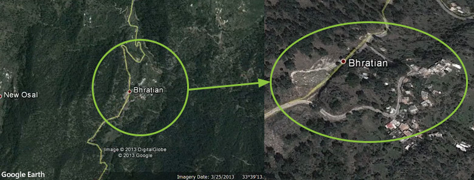
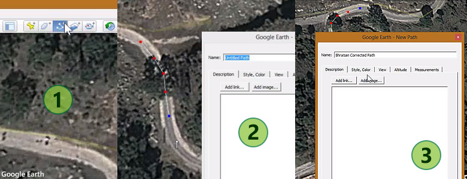
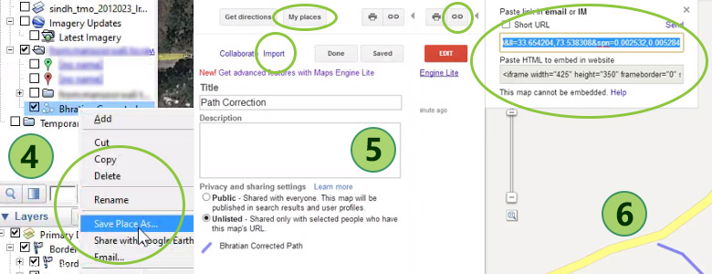

Roads alignment in Google Map Maker with help of Google Earth imagery
In March 2013, I was planning a surprise trip to Rawalakot, Azad Kashmir for misses. As usual, I looked for area details and directions to approach using Google Maps and Google Earth. Also during my free time, I decided to fill up the area with possible features that could be useful for me and ultimately to everyone using the maps. This included addition and editing of the visitors points, point of interests and alignment of existing roads. One of those additions is mesmerising and attractive Bajosa Lake.
While aligning the roads in this area, I came across a portion of road near Bhratian village that had a new path. The new path was bit unclear being covered with trees when looked at satellite imagery (available that time) in Google Map Maker and Maps.
Screenshot from Google Earth showing the old road path
I decided to use the good old method of aligning the road using Google Earth imagery as it was newer than one at Google Maps or Google Map Maker. Just so you know that imagery update cycle follows the following scheme at Google products.
Google Earth -> Google Maps -> Google Maps Mobile / Google Map Maker
This update cycle is based on personal observations for years so this should not be assumed 100% correct or official. So basically most of us mappers would go to Google Earth to look for newer/latest imagery for an area so the changes can be acknowledged. The funniest part is that map data works other way round. The collected map data goes from Google Map Maker to Google Maps and Google Maps Mobile and then makes its way to Google Earth. But again, these personal observations should not be used to make assumptions although it has been like this ever since I got involved with mapping at this platform.
Starting from Google Earth, first thing is to draw the correct path using Google Earth built in tools. The path tool actually works in similar way as we draw roads in Google Map Maker.
Segmented demonstration of road drawing in Google Earth
After a path is drawn, next step is to take it to Google Map Maker. To accomplish this, path needs to be exported as KML/KMZ file type, as demonstrated in following screenshot. Once exported, they are then imported to the Google Maps “My Maps”. From here this file can be used as an overlay in Google Map Maker. For this, just copy the KML link URL for this imported map.
Segmented demonstration of saving the KML/KMZ and importing to Google Maps My Maps
Next step is to go to Google Map Maker and choose the option to add a new Overlay that will bring up a popup. Paste the URL into first text field and select “Add”. This will add the overlay to the map view port and centres it automatically. It is now only a matter of drawing on top of the path. But in my case since I was correcting an existing path, I needed to edit the existing road and move the nodes (intersections) to match the drawn path overlay. Once done, overlay was removed and edited road was saved with appropriate details in comment. Later on, only after my visit to the area I came to know that old portion of road was actually cut off due to heavy land sliding and new alternative section was built as replacement.
Here is also a screen cast that I made of these events that actually may explain in more details than this post. Enjoy mapping!